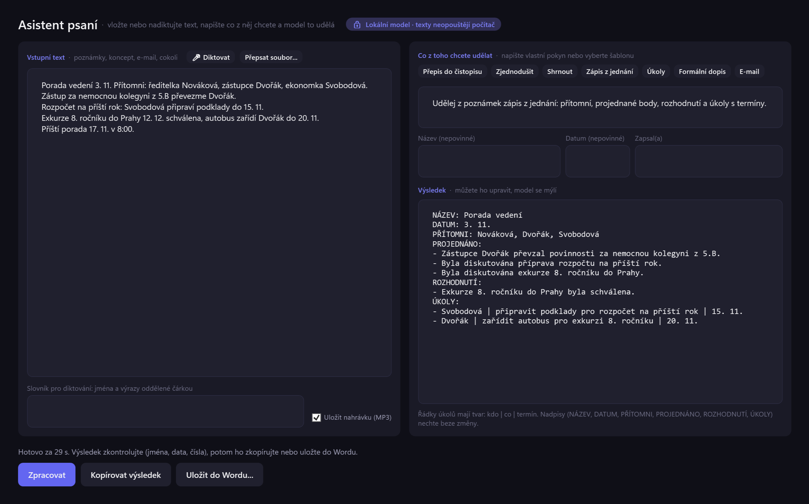
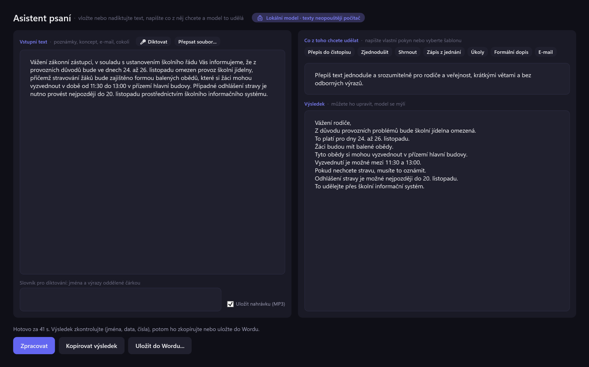
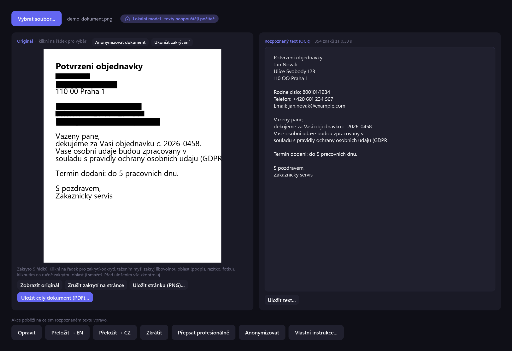

Umělá inteligence, která zůstává u vás
Lokální AI asistent pro Windows
Aplikace, ve které jazykový model běží přímo na vašem počítači. Texty z ní neodcházejí na žádný cizí server a všechno funguje i bez připojení k internetu.
- bez účtu a bez předplatného
- bez grafické karty
- jeden soubor .exe, bez instalace
- Windows x64 i ARM64

Proč to vzniklo
Citlivé texty do cloudu nepatří
Jména a rodná čísla žáků, zprávy z poradny, personální podklady. Právě u takových textů by pomoc umělé inteligence nejvíc šetřila čas, a právě ty se nesmí posílat do běžných internetových služeb. AI Yours je nástroj, kterému lze takový text svěřit, protože se nikam neodesílá.
Vznikl pro školy, ale hodí se kdekoli, kde se pracuje s osobními údaji: úřad, ordinace, kancelář.
Co umí
Funkce
Akce nad označeným textem
Označíte text kdekoli ve Windows (e-mail, Word, web), stisknete Ctrl+Shift+A a vyberete akci:
- opravit pravopis a překlepy
- přeložit mezi češtinou a angličtinou
- zkrátit
- přepsat formálněji
- anonymizovat
- vlastní pokyn
Asistent psaní
Vlevo váš text (napsaný, vložený nebo nadiktovaný), vpravo okno s pokynem. Můžete napsat vlastní pokyn nebo kliknout na šablonu: přepis do čistopisu, zjednodušení, shrnutí, zápis z jednání, úkoly, formální dopis, e-mail. Výsledek upravíte, zkopírujete nebo uložíte do Wordu.
Zápis z porady do Wordu
Z hrubých poznámek vznikne dokument s nadpisy, odrážkami a tabulkou úkolů (kdo, co, do kdy). Soubor .docx se vytvoří přímo, Word nemusí být nainstalovaný.
Diktování a přepis nahrávek
Rozpoznání řeči (Whisper) běží taky na vašem počítači. Během mluvení vidíte průběžný náhled, po zastavení celou nahrávku přepíše přesnější model. Lze přepsat i hotovou nahrávku (mp3, m4a, wav, wma). Do slovníku napíšete jména a výrazy, které se mají psát správně.
Anonymizace dokumentů
Načtete sken nebo PDF, aplikace přečte text (OCR) a zakryje řádky s osobními údaji. Co přehlédne, dozakryjete kliknutím nebo tažením myši. Uloží se nový dokument, kde je každá stránka jen obrázek bez textové vrstvy, takže pod černým pruhem nic není.
Režim bez internetu
Jedno kliknutí v nabídce u ikony v oznamovací oblasti. Aplikace pak nevolá žádnou síť a stahování je zablokované. Hodí se tam, kde se s citlivými daty nesmí riskovat.
Ukázky
Jak to vypadá
Všechny ukázky jsou na vymyšlených datech. Výstupy vygeneroval skutečný model, nejde o předělané obrázky.
Zjednodušení textu pro rodiče
Úřední formulace přepsaná srozumitelně. Pokyn můžete upravit, třeba na „napiš z toho dopis řediteli“.


Anonymizace dokumentu
Model navrhne řádky s osobními údaji, doladíte je myší. Rodná čísla, telefony, e-maily, PSČ, čísla účtů a IBAN se zakryjí vždy, i když je model přehlédne.
Na rovinu
Co je potřeba vědět předem
Omezení
- Je to pomalejší než velké internetové služby. Na notebooku bez grafické karty trvá odpověď na dvě věty řádově deset až dvacet sekund. Čísla jsou z měření na jednom notebooku, ne z nezávislého testu.
- Model se mýlí. Nejčastěji ve shodě rodu, v překladu, ve jménech a v datech. Výstup vždy přečtěte, než ho použijete.
- Přepis řeči není dokonalý. Jména a čísla si po diktování zkontrolujte.
- Anonymizace je pomocník, ne rozhodčí. Před sdílením dokumentu zkontrolujte všechny stránky.
- Licence modelů. Aplikace stahuje volně dostupné modely (Qwen3, Gemma 4). Před nasazením ve škole nebo firmě si ověřte jejich licenční podmínky.
- Nahrávky z diktování. Pokud je nechcete ukládat, zaškrtávátko „Uložit nahrávku (MP3)“ vypněte. Soubory na disku nejsou šifrované.
Vyzkoušet
Stažení a spuštění
Stáhněte si jeden soubor .exe podle procesoru vašeho počítače. Instalace není potřeba.
| Soubor | Pro koho |
|---|---|
AIYours-x64.exe | drtivá většina PC a notebooků (Intel, AMD). Běží i emulovaně na ARM, takže funguje skoro vždy. |
AIYours-ARM64.exe | Windows na ARM (například Snapdragon X Elite) |
Typ procesoru zjistíte v Nastavení → Systém → O systému → Typ systému.
- Stáhněte soubor ze stránky Releases. Soubor má asi 250 MB.
- Spusťte ho. Aplikace naskočí do oznamovací oblasti vedle hodin.
- Při prvním spuštění vás průvodce provede výběrem jazykového modelu. Model se stáhne jednou (jednotky GB), proto je v tu chvíli potřeba internet. Pak už aplikace funguje i offline.
- Označte text kdekoli a stiskněte
Ctrl+Shift+A.
Soubor není digitálně podepsaný, takže Windows může při prvním spuštění zobrazit varování SmartScreen. Je to osobní projekt, zdrojový kód zatím není veřejný a v repozitáři jsou jen hotové sestavené verze.